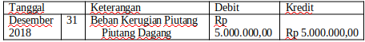
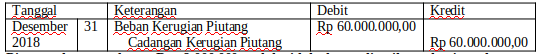
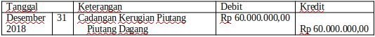

a. Metode Langsung
Dengan metode langsung, jika ada piutang yang benar-benar tidak dapat ditagih maka perusahaan tidak membuat penyesuaian atas kerugian piutang tetapi menganggap sebagai kerugian.
Contoh Soal :
Pada 2018 PD Sinar Sentosa memiliki piutang dagang perusahaan kepada PD Sunset sejumlah Rp. 5.000.000 yang tidak akan dapat ditagih karena PD Sunset bangkrut.
Jawab :

b. Metode Tidak Langsung (Cadangan)
Dengan metode tak langsung perusahaan harus membuat jurnal penyesuaian atas kerugian piutang. Walaupun piutang tersebut belum dipastikan dapat ditagih maka perusahaan dapat mengakuinya sebagai kerugian.
Contoh Soal :
PD Sinar Sentosa menentukan besarnya Penyisihan Piutang Tak Tertagih sebesar 0,5 % dari penjualan secara kredit. Diketahui hasil Penjualan Kredit selama tahun 2018 adalah Rp. 12.000.000.000. Maka Penyisihan Piutang Tak Tertagih = 0,5 % x Rp 12.000.000.000 = Rp 60.000.000.
Jawab :

Piutang dagang sebesar Rp. 8.000.000 sudah tidak dapat ditagih,
maka jurnal Penyesuaian yang dibuat adalah:
